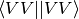

CCDENSITY¶
Computes the coupled cluster density matrices. Called whenever CC properties and/or gradients are required.
General¶
AO_BASIS¶
The algorithm to use for the  terms
- Type: string
- Possible Values: NONE, DISK, DIRECT
- Default: NONE
CACHELEVEL¶
The amount of cacheing of data to perform
- Type: integer
- Default: 2
INTS_TOLERANCE¶
Minimum absolute value below which integrals are neglected.
- Type: conv double
- Default: 1e-14
ONEPDM_GRID_CUTOFF¶
Cutoff (e/A^3) for printing one-particle density matrix values on a grid
- Type: double
- Default: 1.0e-30
ONEPDM_GRID_DUMP¶
Write one-particle density matrix on a grid to file opdm.dx
- Type: boolean
- Default: false
ONEPDM_GRID_STEPSIZE¶
Stepsize (Angstrom) for one-particle density matrix values on a grid
- Type: double
- Default: 0.1
OPDM_RELAX¶
Do relax the one-particle density matrix?
- Type: boolean
- Default: false
ROOTS_PER_IRREP¶
The number of electronic states to computed, per irreducible representation
- Type: array
- Default: No Default
 and
and  to be connected?
to be connected?